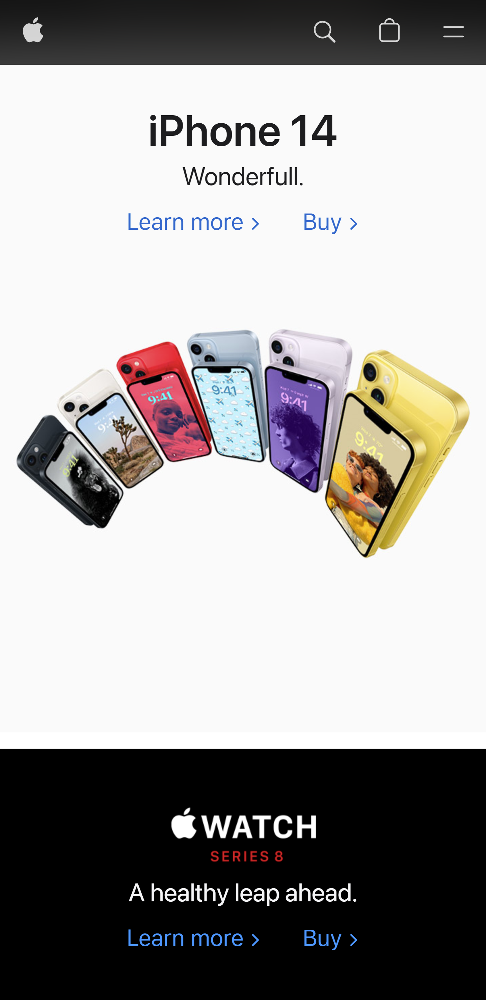

Contrast
Medium.comPeople say that opposites attract and this can be true for elements of design as well. Imagine a composition without contrast –every color, font, shape, etc. would be the same size, and that design would be rather dull. Contrast is the tool that makes a design “pop,” making it memorable for viewers. Contrast also aids in the usability of a composition. A design’s organization is dependent upon how contrast is used to lead a viewer’s eye towards what is most important.
Proximity
Apple.com When designers move elements closer together or farther apart, they are employing the principle of proximity. There are two major reasons why a designer would employ proximity: to create connections or deploy them. When we view elements of design near each other within a composition, we perceive those elements as related. By placing elements away from one another, a designer is able to convey that there is no relationship between them. The relationship between elements creates relevancy, organization, structure, and hierarchy.
Alignment
softwareadviceAlthough alignment is typically overlooked, without this tool a design would lack a sense of direction, unity, or organization. Alignment simply refers to how elements are placed on a page. Its purpose goes beyond organization, it is vital for enhancing the overall visual appeal of a design or page layout.